La saga de Resident Evil es una de las más complejas dentro del mundo de los videojuegos, con múltiples protagonistas, eventos paralelos y una historia que se extiende durante décadas. Su narrativa gira en torno a experimentos biológicos, corporaciones corruptas y brotes virales que transforman a la humanidad.
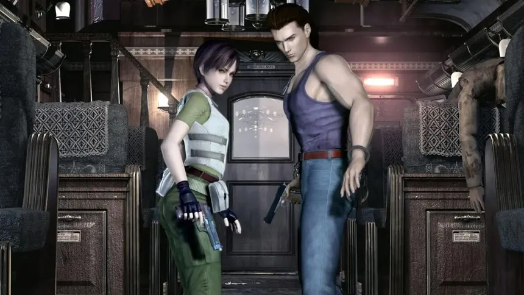
Antes de los eventos de la Mansión Spencer, Rebecca Chambers, una joven miembro del equipo S.T.A.R.S Bravo, es enviada junto a su escuadrón a investigar una serie de asesinatos misteriosos en las montañas Arklay. Durante la misión, su helicóptero sufre una falla y se ven obligados a aterrizar en el bosque, donde descubren un transporte militar detenido en medio de la nada. Allí Rebecca se encuentra con Billy Coen, un exmarine condenado a muerte que ha escapado bajo circunstancias sospechosas. A pesar de la desconfianza inicial, ambos se ven obligados a colaborar para sobrevivir a una amenaza desconocida.
La investigación los lleva a un tren aparentemente abandonado, el Ecliptic Express, donde descubren que los pasajeros han sido infectados por una sustancia biológica que los transforma en criaturas violentas. A medida que avanzan, el tren se convierte en un entorno claustrofóbico lleno de peligros, incluyendo extrañas criaturas formadas por sanguijuelas. Tras sobrevivir al caos, Rebecca y Billy llegan a un centro de investigación secreto perteneciente a Umbrella, donde comienzan a descubrir la verdad detrás de los experimentos.
Detrás de estos eventos se encuentra James Marcus, uno de los fundadores de Umbrella, quien fue traicionado y asesinado por sus propios colegas. Su conciencia sobrevive a través de un organismo compuesto por sanguijuelas, adoptando una forma humana para ejecutar su venganza. Marcus desata el Virus-T como parte de su plan, provocando el brote que eventualmente dará inicio a toda la tragedia en Raccoon City. Rebecca y Billy se enfrentan a múltiples mutaciones de esta entidad mientras intentan detener la propagación del virus.
A lo largo de la historia, Billy revela más sobre su pasado, demostrando que fue incriminado por crímenes que no cometió completamente, lo que genera un vínculo de confianza con Rebecca. Finalmente, ambos logran derrotar a la forma final de Marcus, evitando que el brote se expanda aún más. Tras el enfrentamiento, Rebecca decide dejar escapar a Billy, falsificando su muerte como un acto de justicia personal. Separando sus caminos, Rebecca se dirige hacia la Mansión Spencer, sin saber que una nueva pesadilla está a punto de comenzar.
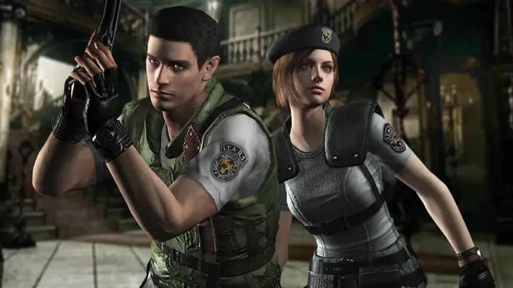
Tras los eventos ocurridos en las montañas Arklay, el equipo S.T.A.R.S Alpha es enviado a investigar la desaparición del equipo Bravo, perdiendo contacto poco después de su llegada. Durante la misión, el grupo es atacado por criaturas desconocidas en el bosque, obligándolos a refugiarse en una mansión aparentemente abandonada: la Mansión Spencer. Lo que parece un lugar seguro pronto se convierte en una trampa mortal, donde los sobrevivientes, incluyendo a Chris Redfield o Jill Valentine, comienzan a descubrir el horror que se esconde en su interior.
A medida que exploran la mansión, encuentran documentos que revelan experimentos ilegales llevados a cabo por la corporación Umbrella. El Virus-T ha sido liberado dentro del complejo, transformando al personal en zombis y creando monstruosidades como los Hunters. También descubren laboratorios subterráneos ocultos, donde se desarrollaban armas biológicas con fines militares. La tensión aumenta cuando queda claro que no solo están luchando por sobrevivir, sino que están atrapados en el epicentro de un experimento fuera de control.
Con el paso del tiempo, la verdad sobre su líder comienza a salir a la luz. Albert Wesker, capitán de S.T.A.R.S, revela ser un agente doble trabajando para Umbrella. Su objetivo es recopilar datos de combate sobre las bioarmas utilizando a su propio equipo como sujetos de prueba. Wesker libera al Tyrant, una de las creaciones más avanzadas del Virus-T, con la intención de eliminar a los sobrevivientes. Sin embargo, la situación se descontrola, y el propio Wesker es traicionado por la criatura que intenta controlar.
En el enfrentamiento final, los sobrevivientes logran derrotar al Tyrant y activan el sistema de autodestrucción del laboratorio para eliminar toda evidencia de Umbrella. Mientras la mansión comienza a colapsar, deben escapar antes de que todo sea destruido. Finalmente, logran huir en helicóptero, dejando atrás el complejo en llamas. Aunque han sobrevivido, ahora conocen la verdad sobre Umbrella y el peligro del Virus-T, marcando el inicio de una lucha mucho mayor contra el bioterrorismo.
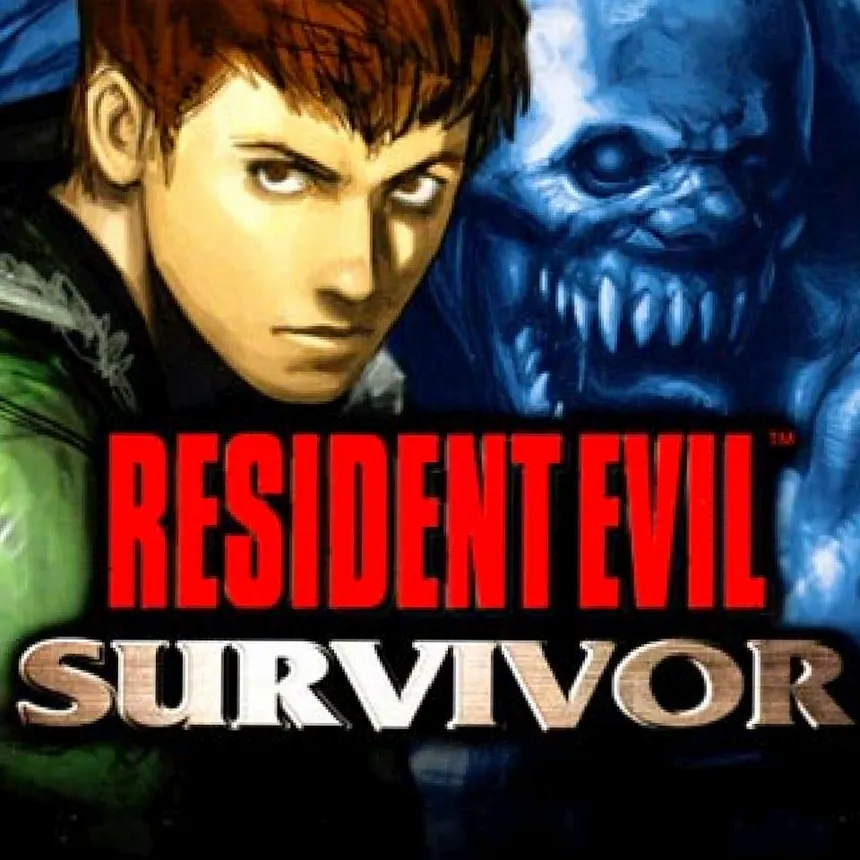
En una isla remota controlada por Umbrella, conocida como Sheena Island, un hombre despierta tras un accidente de helicóptero sin recordar quién es ni cómo llegó allí. Desorientado y rodeado de un entorno devastado, pronto descubre que la isla ha sido escenario de un brote biológico masivo. Las instalaciones de Umbrella han perdido el control de sus experimentos, y las calles están infestadas de zombis y criaturas mutadas. Mientras intenta sobrevivir, el hombre comienza a experimentar fragmentos de memoria que no logra comprender del todo.
A medida que avanza, se cruza con distintos sobrevivientes, incluyendo a Lott Klein y su hermana Lily, quienes también intentan escapar del desastre. A través de documentos y registros, se revela que la isla era utilizada como centro de entrenamiento y desarrollo de armas biológicas, donde Umbrella realizaba pruebas con el Virus-T en condiciones controladas. Sin embargo, un incidente interno provocó la liberación del virus, desencadenando el caos total en la isla.
El protagonista comienza a sospechar de su propia identidad cuando descubre que podría estar relacionado con Umbrella. Eventualmente, se revela que su nombre es Ark Thompson, un investigador enviado por Leon S. Kennedy para infiltrarse en la isla y recopilar información sobre las actividades de la corporación. Sin embargo, durante el incidente, pierde la memoria tras el accidente, adoptando temporalmente la identidad de Vincent Goldman, el comandante de la isla.
Vincent Goldman resulta ser el responsable directo del brote, obsesionado con demostrar la superioridad de las armas biológicas y dispuesto a sacrificar a toda la población de la isla. A medida que la verdad sale a la luz, Ark debe enfrentarse no solo a las criaturas que infestan el lugar, sino también a Goldman, quien finalmente muta en una forma monstruosa tras exponerse al Virus-T. Este enfrentamiento representa el punto culminante de la pesadilla en Sheena Island.
Tras derrotar a Goldman, Ark logra recuperar completamente su identidad y comprende la magnitud de lo ocurrido. Con la ayuda de los sobrevivientes, consigue escapar de la isla antes de su destrucción total. Aunque el incidente queda oculto al público, Ark obtiene información crucial sobre Umbrella y sus experimentos, contribuyendo a la creciente evidencia contra la corporación. Este evento, aunque aislado, demuestra que el alcance de Umbrella es mucho mayor de lo que se creía, extendiéndose a múltiples instalaciones alrededor del mundo.
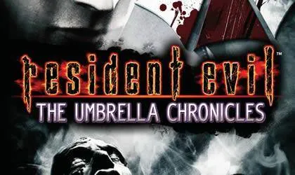
Resident Evil: Umbrella Chronicles recorre distintos eventos clave de la saga, profundizando en la historia de la corporación Umbrella y su caída. A través de múltiples operaciones, se revelan detalles que conectan los incidentes de la Mansión Spencer, Raccoon City y otras instalaciones secretas. Entre los protagonistas se encuentran Chris Redfield, Jill Valentine, Rebecca Chambers y otros sobrevivientes, quienes regresan a lugares marcados por las tragedias del pasado para enfrentarse nuevamente a las consecuencias del Virus-T.
Uno de los puntos más importantes es la revisita a la Mansión Spencer, donde se reconstruyen los eventos del brote inicial. A medida que avanzan, los personajes descubren más sobre los orígenes de Umbrella y sus fundadores, incluyendo a Oswell E. Spencer. También se muestran los experimentos que llevaron a la creación de las primeras bioarmas, revelando la ambición de la corporación por dominar el desarrollo militar mediante armas biológicas.
La historia también aborda los eventos ocurridos en Raccoon City desde diferentes perspectivas, mostrando cómo el caos se expandió rápidamente y cómo distintas unidades intentaron contener el desastre sin éxito. Se exploran instalaciones ocultas y operaciones encubiertas, dejando en claro que Umbrella tenía un control mucho más amplio del que se pensaba. La magnitud del brote demuestra que no fue un accidente aislado, sino el resultado de años de experimentación irresponsable.
El punto más importante de Umbrella Chronicles es la misión final de Chris Redfield y Jill Valentine, quienes se infiltran en una de las últimas bases activas de Umbrella en Rusia. Allí descubren que la corporación continúa operando en secreto, desarrollando nuevas bioarmas a pesar de su caída pública. Durante la operación, enfrentan a múltiples enemigos y descubren evidencia clave que vincula a Umbrella con los eventos globales de bioterrorismo.
Finalmente, logran destruir la instalación y obtener datos que contribuyen a la caída definitiva de Umbrella como organización. Sin embargo, también queda claro que su legado no desaparece, ya que otras compañías y grupos comienzan a utilizar sus investigaciones. Umbrella Chronicles cierra una etapa fundamental en la saga, mostrando cómo el origen del desastre es finalmente expuesto, pero dejando abierta la puerta a nuevas amenazas en el mundo del bioterrorismo.
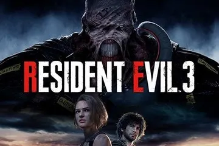
Días antes de la destrucción de Raccoon City, Jill Valentine permanece oculta en su apartamento, investigando en secreto a la corporación Umbrella tras los eventos de la Mansión Spencer. Aislada y vigilada, su vida se convierte en una constante paranoia hasta que una noche todo cambia. La ciudad cae en el caos cuando el Virus-T se propaga sin control, transformando a la población en hordas de zombis. En medio del desastre, una nueva amenaza aparece: Nemesis, una bioarma avanzada diseñada específicamente para eliminar a los miembros de S.T.A.R.S.
Nemesis irrumpe violentamente en el apartamento de Jill, iniciando una persecución implacable que la obliga a huir por las calles en llamas de la ciudad. A diferencia de otras criaturas, Nemesis demuestra inteligencia, utiliza armas y es capaz de rastrear a su objetivo sin descanso. Jill logra escapar temporalmente, pero pronto comprende que no se trata de una amenaza común, sino de una cacería personal organizada por Umbrella para eliminar testigos de sus crímenes.
Mientras intenta encontrar una salida, Jill se cruza con otros sobrevivientes, incluyendo a Carlos Oliveira, miembro de la U.B.C.S, una unidad enviada por Umbrella con la supuesta misión de rescatar civiles. Sin embargo, rápidamente queda claro que la situación está completamente fuera de control y que incluso estas fuerzas han sido superadas por el brote. A pesar de la desconfianza inicial, Jill y Carlos deciden colaborar para intentar sobrevivir.
A medida que la ciudad colapsa, Jill recorre distintos sectores devastados, enfrentándose a hordas de infectados y criaturas mutadas mientras busca una vía de escape. Sin embargo, Nemesis continúa persiguiéndola sin descanso, apareciendo en los momentos más críticos y obligándola a luchar constantemente por su vida. El inicio de esta historia marca el punto más alto del desastre en Raccoon City, donde el orden ha desaparecido y la supervivencia depende únicamente de resistir un poco más.
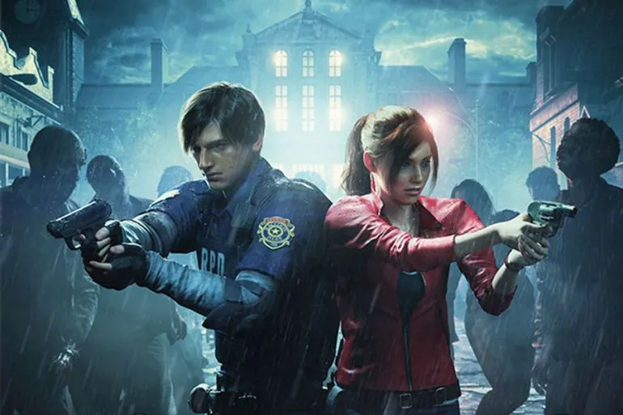
En septiembre de 1998, en medio del colapso total de Raccoon City, Leon S. Kennedy llega a la ciudad en su primer día como oficial de policía, sin saber que está entrando en una pesadilla. Al mismo tiempo, Claire Redfield arriba en busca de su hermano Chris, desaparecido tras los incidentes en la Mansión Spencer. Ambos se cruzan brevemente en una estación de servicio antes de verse obligados a separarse al ser atacados por una horda de zombis, iniciando caminos distintos que los llevarán al mismo destino: el Departamento de Policía de Raccoon City.
Dentro del R.P.D, Leon y Claire descubren que la comisaría, que alguna vez fue un lugar seguro, se ha convertido en un laberinto lleno de peligros. Allí encuentran sobrevivientes como Marvin Branagh, quien les advierte sobre la gravedad del brote antes de sucumbir a la infección. A medida que exploran el edificio, descubren pistas que revelan la implicación de Umbrella en el desastre y la existencia de un laboratorio oculto bajo la ciudad.
La situación se vuelve aún más desesperada con la aparición de una bioarma conocida como Tyrant, o Mr. X, enviada para eliminar cualquier evidencia y sobreviviente. Esta criatura comienza a perseguir implacablemente a Leon y Claire, obligándolos a moverse constantemente y evitando cualquier sensación de seguridad. Paralelamente, Claire encuentra a Sherry Birkin, una niña que huye de su propio padre, William Birkin, quien ha sido mutado por el Virus-G tras intentar proteger su investigación de Umbrella.
William Birkin, completamente transformado, evoluciona a lo largo de la historia en formas cada vez más grotescas y peligrosas, persiguiendo a quienes se cruzan en su camino. Leon, por su parte, se encuentra con Ada Wong, una mujer misteriosa que afirma buscar a un científico, aunque sus verdaderas intenciones son mucho más complejas. A medida que los caminos de los personajes se cruzan y separan, todos terminan descendiendo hacia las instalaciones subterráneas de Umbrella.
En el laboratorio, se revela la magnitud de los experimentos y la creación del Virus-G. Leon y Claire enfrentan sus últimos desafíos mientras intentan escapar del lugar antes de su autodestrucción. Ada aparentemente muere tras ayudar a Leon, aunque deja dudas sobre su destino. Finalmente, Leon, Claire y Sherry logran escapar de la ciudad, dejando atrás la pesadilla. Sin embargo, el desastre de Raccoon City está lejos de terminar, y sus consecuencias marcarán el futuro del mundo.
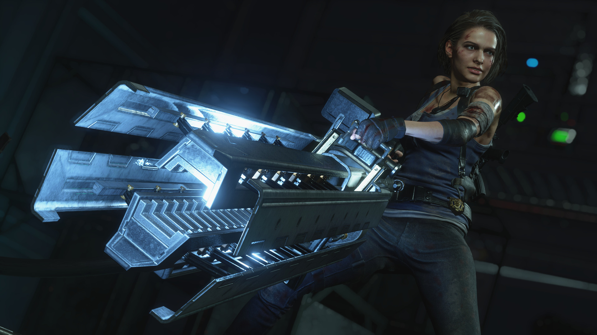
Mientras el caos en Raccoon City alcanza su punto máximo, Jill Valentine continúa su lucha por sobrevivir mientras es perseguida sin descanso por Nemesis. Tras múltiples enfrentamientos, logra infligirle daños significativos, pero la criatura evoluciona constantemente, volviéndose cada vez más peligrosa. Durante su intento de escapar, Jill es infectada por el Virus-T tras un brutal ataque de Nemesis, quedando al borde de la muerte. Carlos Oliveira asume entonces el protagonismo, decidido a encontrar una cura antes de que sea demasiado tarde.
Carlos se infiltra en el Hospital Spencer Memorial, donde descubre la magnitud del desastre y logra obtener una vacuna experimental capaz de salvar a Jill. Tras defender el lugar de una oleada de criaturas, regresa con ella y logra estabilizarla. Una vez recuperada, Jill retoma su misión con un único objetivo: acabar definitivamente con Nemesis y escapar de la ciudad antes de su destrucción total.
La evacuación se vuelve cada vez más urgente cuando el gobierno de Estados Unidos toma la decisión de eliminar Raccoon City mediante un ataque nuclear para contener el brote. Jill y Carlos se dirigen a una instalación subterránea de Umbrella, donde descubren los últimos restos de los experimentos y enfrentan a una versión completamente mutada de Nemesis, ahora convertido en una criatura monstruosa fuera de control.
En el enfrentamiento final, Jill utiliza un potente cañón experimental para destruir definitivamente a Nemesis, poniendo fin a la amenaza que la ha perseguido desde el inicio. Con el tiempo en su contra, logra escapar junto a Carlos en helicóptero justo antes de que el misil impacte la ciudad. Raccoon City es completamente destruida, borrando toda evidencia del desastre y de las actividades de Umbrella.
Aunque han sobrevivido, tanto Jill como Carlos comprenden que lo ocurrido no es el final, sino el comienzo de una crisis global. La destrucción de la ciudad marca un antes y un después en la historia, dejando en claro que el bioterrorismo se ha convertido en una amenaza real para el mundo entero. Con esta tragedia, se cierra el capítulo de Raccoon City, pero la lucha contra Umbrella y sus consecuencias continúa.
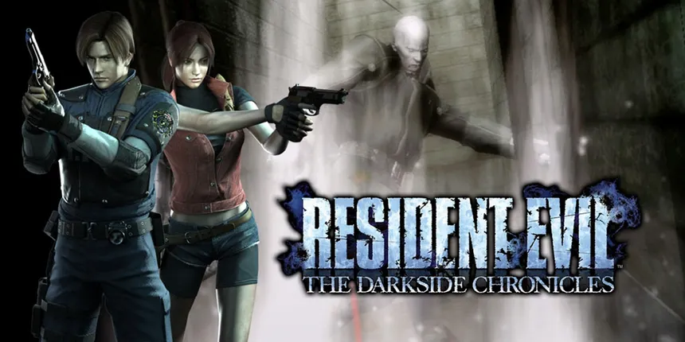
Años después del desastre de Raccoon City, Leon S. Kennedy trabaja como agente del gobierno de Estados Unidos y es enviado a Sudamérica junto a Jack Krauser para investigar la actividad de un poderoso narcotraficante vinculado al bioterrorismo. Durante la misión, ambos se adentran en una región controlada por Javier Hidalgo, quien utiliza armas biológicas para mantener su poder. A medida que avanzan, descubren que Hidalgo ha estado experimentando con un virus derivado de investigaciones de Umbrella, transformando a personas en criaturas monstruosas.
La misión se convierte rápidamente en una pesadilla cuando Leon y Krauser enfrentan hordas de infectados y criaturas mutadas en un entorno selvático hostil. A lo largo de la operación, se muestra el vínculo entre ambos soldados, quienes luchan codo a codo para sobrevivir. Sin embargo, también se revelan diferencias en su forma de ver el mundo, especialmente cuando Krauser comienza a obsesionarse con el poder de las armas biológicas, viendo en ellas una evolución necesaria para la humanidad.
El enfrentamiento final contra Javier Hidalgo muestra el alcance de estos experimentos, ya que se fusiona con una bioarma para convertirse en una criatura gigantesca. Leon y Krauser logran derrotarlo, poniendo fin a la amenaza en la región. Sin embargo, esta misión marca un punto de quiebre en la relación entre ambos, ya que Krauser queda profundamente afectado por lo vivido, sembrando las bases de su futuro camino.
Paralelamente, Darkside Chronicles también reconstruye los eventos de Raccoon City desde otra perspectiva, mostrando nuevamente la lucha de Leon y Claire Redfield durante el brote, así como el enfrentamiento contra William Birkin y la huida final de la ciudad. Estos recuerdos sirven para reforzar el impacto de aquel desastre y cómo marcó a los protagonistas.
La historia también se conecta directamente con los eventos de Code Veronica, profundizando en el conflicto de Claire Redfield tras la desaparición de su hermano y su lucha contra Umbrella en otras partes del mundo. De esta forma, Darkside Chronicles no solo amplía los eventos conocidos, sino que actúa como un puente entre el pasado y el futuro de la saga, mostrando cómo el bioterrorismo continúa evolucionando y afectando a quienes sobrevivieron a Raccoon City.
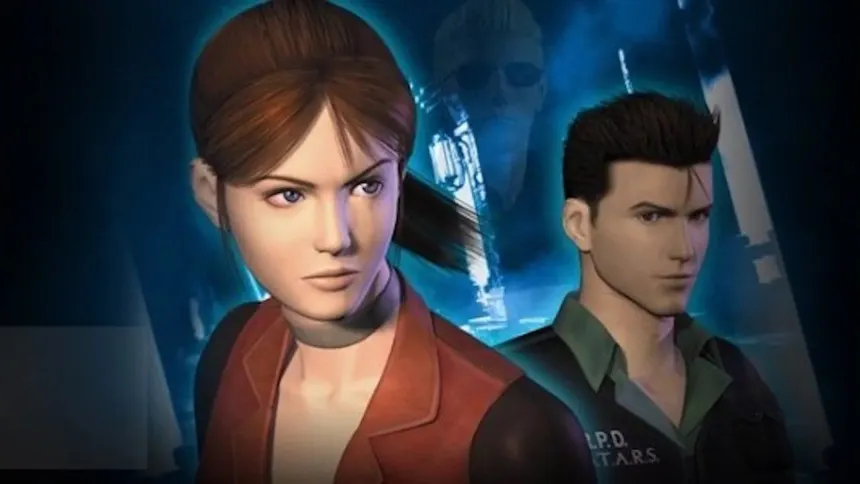
Tras sobrevivir al desastre de Raccoon City, Claire Redfield continúa su búsqueda incansable de su hermano Chris, siguiendo pistas que la llevan a infiltrarse en una instalación de Umbrella en París. Sin embargo, es capturada durante la misión y enviada a una prisión en Rockfort Island, una remota base controlada por la corporación. Poco después de su llegada, la isla es atacada y un brote del Virus-T se desata, sumiendo el lugar en el caos y liberando a los prisioneros y criaturas experimentales.
En medio del desastre, Claire logra escapar de su celda y se encuentra con Steve Burnside, otro prisionero que busca sobrevivir a toda costa. Juntos intentan huir de la isla mientras enfrentan zombis y otras bioarmas. Durante su recorrido, descubren que la instalación está bajo el control de Alfred Ashford, descendiente de una de las familias fundadoras de Umbrella, quien muestra un comportamiento inestable y una obsesión enfermiza con su hermana Alexia.
A medida que la situación empeora, Claire logra enviar un mensaje a Chris, quien decide ir en su búsqueda. Mientras tanto, se revela que Alexia Ashford, considerada muerta durante años, en realidad ha estado en un estado de hibernación tras infectarse voluntariamente con el Virus T-Veronica, un proyecto destinado a crear una forma de vida superior. Cuando finalmente despierta, demuestra un control total sobre el virus, convirtiéndose en una amenaza extremadamente peligrosa.
La llegada de Chris cambia el rumbo de la historia, enfrentándose tanto a las criaturas de la isla como a Alfred y posteriormente a Alexia. Durante estos eventos también reaparece Albert Wesker, quien ha sobrevivido a los sucesos de la Mansión Spencer y ahora posee habilidades sobrehumanas. Wesker busca obtener el Virus T-Veronica para sus propios fines, entrando en conflicto directo con Chris en un enfrentamiento que deja claro que ahora es mucho más poderoso que antes.
En el clímax de la historia, Chris y Claire se enfrentan a Alexia en su forma final, logrando derrotarla tras una intensa batalla. Steve, quien había sido infectado, muere tras intentar ayudar a Claire, completando su arco trágico. Finalmente, los hermanos Redfield logran escapar mientras Wesker consigue recuperar una muestra del virus, asegurando que la amenaza continúe en el futuro. Code Veronica marca un punto de inflexión en la saga, consolidando el regreso de Wesker y el legado de Umbrella más allá de su aparente caída.
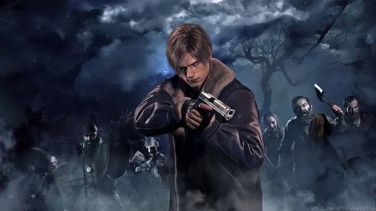
Seis años después de la destrucción de Raccoon City, Leon S. Kennedy trabaja como agente del gobierno de Estados Unidos y recibe la misión de rescatar a Ashley Graham, la hija del presidente, quien ha sido secuestrada y llevada a una aldea aislada en Europa. Al llegar, descubre que los habitantes no son personas normales, sino individuos controlados por un parásito conocido como Las Plagas, lo que los vuelve agresivos pero conscientes. Tras su primer enfrentamiento, Leon es capturado junto a Luis Sera, un exinvestigador vinculado al culto Los Iluminados. Ambos son infectados con el parásito, iniciando una lucha contrarreloj para evitar perder el control de sus mentes.
Luis, arrepentido por su pasado y su participación en los experimentos, busca redimirse ayudando a Leon a encontrar una forma de eliminar la infección. Sin embargo, la situación se complica cuando Leon se enfrenta a figuras clave como Bitores Méndez, líder del pueblo, y posteriormente a Ramón Salazar, quien gobierna un castillo lleno de trampas, criaturas mutadas y fanáticos del culto. En este lugar también aparece Ada Wong, operando en las sombras con sus propios objetivos, manipulando los eventos sin revelar completamente sus intenciones.
A medida que avanza la historia, Leon descubre que el verdadero responsable es Osmund Saddler, líder de Los Iluminados, quien planea utilizar a Ashley como portadora del parásito para infiltrarse en el gobierno de Estados Unidos. Mientras tanto, en los eventos paralelos de Separate Ways, se revela que Ada ha sido enviada para obtener una muestra de Las Plagas, moviéndose entre bastidores, enfrentándose a enemigos propios y cruzándose indirectamente con Leon en múltiples ocasiones. Durante estos eventos, Ada también interactúa con Luis, quien intenta entregar información clave antes de su muerte, completando así su acto de redención.
Finalmente, Leon logra eliminar el parásito tanto de él como de Ashley mediante un procedimiento especial, y se dirige al enfrentamiento final contra Saddler. Tras una intensa batalla, consigue derrotarlo con la ayuda indirecta de Ada, quien le proporciona los medios para acabar con él. Con la amenaza neutralizada, Leon escapa junto a Ashley mientras Ada logra su objetivo y se lleva una muestra de Las Plagas, dejando abierta la posibilidad de futuros conflictos. La misión concluye con la sensación de que, aunque una amenaza ha sido eliminada, el bioterrorismo sigue lejos de terminar.
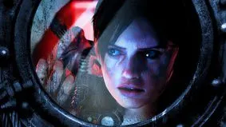
Tras los eventos en Europa, la lucha contra el bioterrorismo se intensifica a nivel global. La BSAA, organización dedicada a combatir estas amenazas, envía a Chris Redfield y Jessica Sherawat a investigar una posible actividad terrorista en una zona montañosa. Sin embargo, durante la misión, Chris desaparece misteriosamente, lo que lleva a Jill Valentine y su nuevo compañero Parker Luciani a iniciar su búsqueda. Las pistas los conducen a un crucero abandonado en medio del mar, el Queen Zenobia, donde comienza una nueva pesadilla.
Al abordar el barco, Jill y Parker descubren que está infestado de criaturas mutadas por el Virus T-Abyss, un agente biológico diseñado para ataques a gran escala. A medida que avanzan por los pasillos oscuros del barco, enfrentan enemigos desconocidos mientras intentan localizar a Chris. Paralelamente, la historia alterna con otros equipos de la BSAA, mostrando cómo distintas operaciones están conectadas en una conspiración mucho mayor.
Con el tiempo, Jill logra reunirse con Chris, pero la situación se complica al revelarse que todo forma parte de un elaborado plan. La organización terrorista Veltro, aparentemente responsable de ataques anteriores, ha sido utilizada como una fachada para manipular a la opinión pública. Detrás de todo se encuentra una conspiración que involucra a altos mandos y el uso del bioterrorismo como herramienta de control global.
El conflicto alcanza su punto máximo cuando se revela la verdad sobre Morgan Lansdale, quien había utilizado el caos generado por Veltro para justificar medidas extremas de seguridad mundial. Mientras tanto, el Virus T-Abyss amenaza con provocar una catástrofe a escala global si no es detenido a tiempo. Jill y Chris deben enfrentarse a las últimas criaturas del barco mientras intentan evitar que la infección se propague.
Finalmente, logran sobrevivir al incidente y exponer la conspiración, aunque queda claro que el bioterrorismo ya no es un problema aislado, sino una amenaza global en constante evolución. Revelations muestra cómo el mundo ha cambiado tras la caída de Umbrella, con nuevas organizaciones, intereses políticos y conflictos que utilizan las armas biológicas como herramienta de poder.
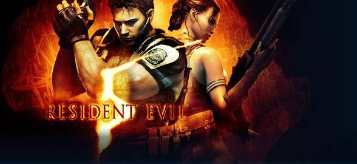
Años después de los incidentes anteriores, Chris Redfield continúa su labor en la BSAA, ahora desplegado en África para investigar la propagación de armas biológicas en el mercado negro. Allí se reúne con su nueva compañera, Sheva Alomar, y juntos se infiltran en una región donde se ha detectado actividad sospechosa relacionada con un posible brote. Sin embargo, lo que encuentran supera cualquier expectativa: la población local ha sido infectada con una nueva variante del virus, convirtiéndose en seres hostiles conocidos como Majini.
A medida que avanzan, Chris comienza a descubrir que detrás de todo se encuentra una red mucho más compleja, vinculada a la corporación Tricell y a viejos enemigos. Durante la misión, reaparece una figura del pasado que se creía muerta: Jill Valentine, ahora bajo el control de Albert Wesker y utilizada como un arma en su contra. Este reencuentro marca profundamente a Chris, quien se niega a aceptar su destino y lucha por salvarla.
Paralelamente, los eventos previos al juego principal se revelan en el episodio "Lost in Nightmares", donde Chris y Jill investigan una mansión perteneciente a Oswell E. Spencer, uno de los fundadores de Umbrella. Allí descubren más sobre los orígenes de la corporación y la ambición de crear una nueva forma de vida. Durante esta misión, Wesker reaparece con habilidades sobrehumanas, enfrentándose a ambos. El enfrentamiento termina cuando Jill se sacrifica lanzándose junto a Wesker al vacío para salvar a Chris, lo que explica su desaparición y posterior control por parte de Wesker.
De regreso a los eventos principales, Chris y Sheva logran liberar a Jill del control al que estaba sometida, permitiéndole recuperar su voluntad. A partir de ese momento, queda claro que el verdadero enemigo es Wesker, quien ha estado manipulando los acontecimientos desde las sombras. Su objetivo es llevar a cabo el Proyecto Uroboros, un plan destinado a liberar un virus capaz de eliminar a la mayoría de la población mundial, dejando solo a aquellos capaces de sobrevivir y evolucionar.
Chris y Sheva descubren que el virus tiene sus raíces en antiguas investigaciones en África, conectando el origen del bioterrorismo con descubrimientos previos a Umbrella. La amenaza se vuelve global, y el tiempo se agota. Finalmente, persiguen a Wesker hasta un volcán activo, donde se produce el enfrentamiento final. Tras una intensa batalla, logran derrotarlo definitivamente, poniendo fin a su visión de una nueva humanidad.
Tras estos eventos, el episodio "Desperate Escape" muestra la lucha de Jill y Josh Stone, quienes trabajan juntos para abrir una ruta de escape y ayudar a Chris y Sheva durante la fase final de la misión. En medio del caos, enfrentan hordas de enemigos mientras intentan garantizar la supervivencia de sus aliados. Su intervención resulta clave para que la operación tenga éxito.
Con la caída de Wesker, se cierra uno de los capítulos más importantes de la saga. Sin embargo, aunque una gran amenaza ha sido eliminada, el mundo sigue enfrentando las consecuencias del bioterrorismo. Nuevas organizaciones, nuevos virus y nuevas conspiraciones comienzan a surgir, dejando claro que la lucha está lejos de terminar.
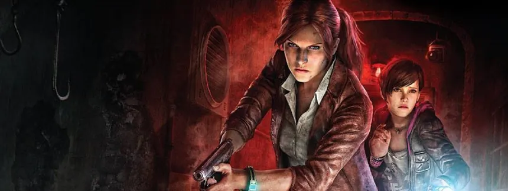
Tiempo después de los eventos en África, Claire Redfield trabaja para la organización TerraSave, dedicada a ayudar a víctimas del bioterrorismo. Durante un evento en sus instalaciones, ella y su compañera Moira Burton, hija de Barry Burton, son secuestradas por un grupo desconocido y llevadas a una isla abandonada. Al despertar, descubren que están atrapadas en un entorno controlado, vigiladas constantemente por una figura misteriosa conocida como la Supervisora, quien las somete a un experimento basado en el miedo.
Mientras intentan escapar, Claire y Moira se enfrentan a criaturas deformadas y agresivas que parecen reaccionar directamente a las emociones humanas, especialmente al miedo. En medio de la desesperación, encuentran a Natalia, una niña con habilidades extrañas que le permiten percibir a los enemigos de una manera única. Juntas avanzan por la isla, intentando sobrevivir y comprender qué está ocurriendo realmente.
Paralelamente, Barry Burton recibe una señal de auxilio de su hija y viaja a la isla en su búsqueda. Allí se encuentra con Natalia y comienza su propia lucha por sobrevivir mientras intenta localizar a Moira y Claire. A medida que avanza, descubre que la isla es el escenario de un experimento llevado a cabo por Alex Wesker, una mujer obsesionada con la idea de trascender la muerte transfiriendo su conciencia a otro cuerpo.
Alex utiliza un virus experimental que no solo infecta físicamente, sino que responde al miedo, transformando a las víctimas en criaturas monstruosas cuando alcanzan niveles extremos de terror. Su objetivo es encontrar un huésped perfecto capaz de resistir este proceso y permitirle transferir su mente. Natalia resulta ser la pieza clave de este experimento, lo que la convierte en el objetivo principal de Alex.
A medida que las historias convergen, se revela que Moira ha sobrevivido tras quedar separada de Claire, enfrentando sus propios miedos para poder seguir adelante. Finalmente, Barry y Natalia enfrentan a Alex en su forma mutada, en un intento por detener su plan. Tras una intensa confrontación, logran derrotarla aparentemente, aunque el destino final de su conciencia deja dudas inquietantes.
Al final, los sobrevivientes logran escapar de la isla, pero queda implícito que el legado de Wesker no ha terminado. Revelations 2 profundiza en el terror psicológico y en la idea de que el verdadero enemigo no es solo el virus, sino el miedo mismo, dejando una marca distinta dentro de la saga y abriendo nuevas posibilidades para el futuro del bioterrorismo.
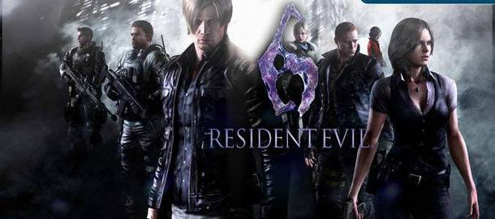
Años después de la caída de Umbrella y la muerte de Wesker, el bioterrorismo se ha expandido a nivel global, afectando múltiples regiones del mundo al mismo tiempo. La historia se desarrolla a través de varios personajes cuyas vidas se cruzan en medio del caos. En Estados Unidos, el presidente Adam Benford decide revelar públicamente la verdad sobre Raccoon City, pero antes de poder hacerlo, un brote lo transforma en una criatura, obligando a Leon S. Kennedy a tomar la difícil decisión de eliminarlo. A partir de ese momento, Leon es acusado de traición y se ve envuelto en una conspiración mucho mayor.
Paralelamente, Chris Redfield lidera un escuadrón de la BSAA en China, enfrentándose a brotes masivos causados por un nuevo agente biológico conocido como el Virus-C. Este virus permite mutaciones rápidas y adaptativas, creando enemigos mucho más peligrosos. Chris, marcado por la pérdida de su equipo en una misión anterior, lucha no solo contra las criaturas, sino también contra sus propios traumas, mientras intenta detener la propagación del virus.
Por otro lado, Jake Muller, hijo de Albert Wesker, posee una inmunidad única al Virus-C, lo que lo convierte en un objetivo clave para diversas organizaciones. Acompañado por Sherry Birkin, ahora agente del gobierno, ambos intentan escapar de fuerzas que buscan capturarlos para utilizar su sangre como base para una cura. Su historia revela la conexión directa con el legado de Wesker y cómo sus acciones siguen afectando al mundo.
En medio de todo esto, Ada Wong aparece nuevamente, involucrada en los eventos desde las sombras. Sin embargo, se revela que existe una doble idéntica a ella, responsable de gran parte del caos y creada como parte de un plan mayor. Esta impostora, conocida como Carla Radames, busca llevar el mundo al colapso utilizando el Virus-C como arma definitiva.
A medida que las distintas historias convergen, queda claro que todos los eventos están conectados por una conspiración global que busca desestabilizar el orden mundial. Leon, Chris, Jake y Sherry terminan enfrentando distintas manifestaciones del virus en múltiples escenarios, desde ciudades en ruinas hasta instalaciones secretas. La lucha es constante y cada enfrentamiento demuestra que el bioterrorismo ha alcanzado un nivel sin precedentes.
En el desenlace, los protagonistas logran detener la propagación del Virus-C y enfrentan a Carla en su forma final, poniendo fin a su plan. Aunque logran evitar una catástrofe total, el daño ya está hecho, y el mundo queda marcado por una nueva era de amenazas biológicas. Resident Evil 6 muestra el punto máximo de expansión del bioterrorismo, donde el peligro ya no está contenido, sino que se ha convertido en un conflicto global permanente.
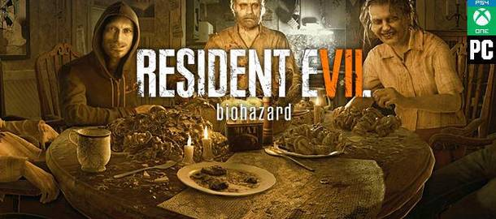
Años después de los eventos globales de bioterrorismo, la historia se centra en Ethan Winters, un hombre común que recibe un mensaje inesperado de su esposa Mia, desaparecida hace años y dada por muerta. Siguiendo la pista, Ethan llega a una plantación abandonada en Luisiana, donde descubre una casa en ruinas habitada por la familia Baker. Lo que parecía una simple búsqueda pronto se convierte en una pesadilla cuando se da cuenta de que los Baker no son humanos normales, sino víctimas de una infección que los ha transformado en seres violentos y casi indestructibles.
Ethan logra encontrar a Mia, pero su comportamiento es errático y peligroso, revelando que está bajo la influencia de una entidad desconocida. A medida que intenta escapar, Ethan es capturado por la familia Baker, compuesta por Jack, Marguerite y Lucas, quienes actúan como una versión distorsionada de una familia, obligándolo a participar en su macabro juego de supervivencia. Sin embargo, a lo largo de su lucha, Ethan comienza a descubrir que los Baker no son completamente responsables de sus acciones.
La verdad se revela progresivamente: todo está relacionado con Eveline, un arma biológica creada como parte de un experimento. Eveline tiene la capacidad de infectar y controlar a las personas mediante un organismo conocido como el moho, manipulando sus mentes para crear una falsa familia a su alrededor. Mia había sido encargada de transportar a Eveline, pero un accidente provocó su liberación, desencadenando los eventos en la plantación.
A medida que Ethan avanza, enfrenta a cada miembro de la familia Baker, liberándolos indirectamente de su sufrimiento al derrotarlos. Finalmente, logra comprender que Eveline es la raíz de todo y que su objetivo es convertirlo en parte de su familia. Con la ayuda de información obtenida en los laboratorios ocultos bajo la casa, Ethan se prepara para el enfrentamiento final.
En el clímax, Ethan logra derrotar a Eveline, poniendo fin a su control sobre la plantación. Poco después, fuerzas especiales llegan al lugar, incluyendo un equipo vinculado a Blue Umbrella, marcando el regreso indirecto de la organización bajo una nueva identidad. Ethan logra sobrevivir junto a Mia, pero queda claro que su experiencia lo ha cambiado profundamente. Resident Evil 7 redefine la saga, alejándose del conflicto global para centrarse en un terror más íntimo, donde la amenaza no es solo biológica, sino también psicológica.
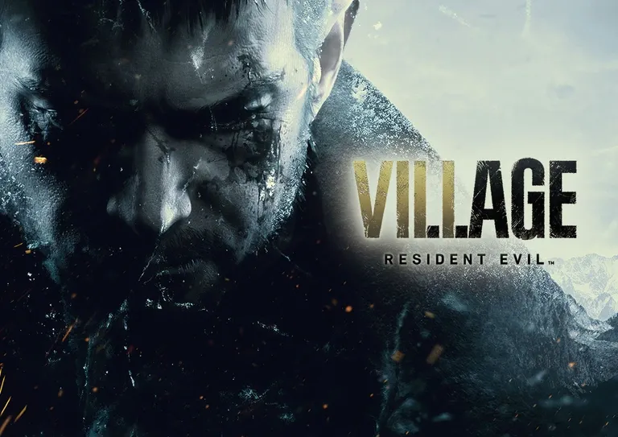
Tras sobrevivir a los eventos en Luisiana, Ethan Winters intenta reconstruir su vida junto a Mia bajo la protección de una organización vinculada a Blue Umbrella. Sin embargo, la tranquilidad dura poco. Una noche, su hogar es atacado por un escuadrón liderado por Chris Redfield, quien aparentemente asesina a Mia y secuestra a Ethan junto a su hija, Rosemary. Durante el traslado, el vehículo es atacado y Ethan despierta en un misterioso pueblo cubierto de nieve, completamente aislado del mundo.
Desorientado y desesperado por encontrar a su hija, Ethan se adentra en el pueblo, donde descubre que los habitantes han sido masacrados o transformados en criaturas salvajes. Pronto se revela que la región está controlada por cuatro poderosos líderes: Lady Dimitrescu, quien gobierna un castillo habitado por sus hijas; Donna Beneviento, que utiliza alucinaciones y manipulación psicológica; Salvatore Moreau, una criatura deformada que habita en un embalse; y Karl Heisenberg, quien controla fuerzas mecánicas y tiene sus propios planes.
Todos ellos responden a una figura central: Mother Miranda, una mujer que lidera el culto de la región y que parece tener un interés particular en Rosemary. A medida que Ethan avanza por cada territorio, enfrenta a estos líderes uno por uno, descubriendo que su hija ha sido fragmentada en partes como parte de un ritual. Su objetivo se vuelve claro: reunir esas partes y recuperar a Rosemary antes de que sea demasiado tarde.
Durante su viaje, Ethan también descubre la verdad sobre su propio estado: tras los eventos en Luisiana, ya no es completamente humano, sino que su cuerpo está compuesto por el mismo organismo que enfrentó anteriormente. Esta revelación explica su capacidad de resistir daños extremos, pero también lo enfrenta con su propia fragilidad. Mientras tanto, se revela que Chris ha estado actuando en secreto para detener a Miranda, quien busca utilizar a Rosemary como recipiente para revivir a su hija fallecida.
En el enfrentamiento final, Ethan logra derrotar a Mother Miranda y rescatar a su hija, pero el esfuerzo lo deja al límite. Comprendiendo que no sobrevivirá, decide sacrificarse para asegurar la destrucción total de la amenaza, activando una explosión que elimina todo rastro del peligro. Chris logra escapar con Rosemary, asegurando su futuro mientras el legado de Ethan queda marcado como el de un padre que lo dio todo por su familia.
Años después, los eventos continúan en el episodio "Shadows of Rose". Rosemary Winters, ahora adolescente, vive bajo vigilancia debido a las habilidades especiales que heredó tras su nacimiento. Buscando liberarse de ese poder, acepta participar en un experimento que la lleva a adentrarse en una versión distorsionada del mundo conocida como el "Megamiceto". Dentro de este lugar, se enfrenta a manifestaciones de recuerdos, traumas y entidades creadas a partir de la conciencia de Eveline y otros restos del pasado.
En este entorno, Rosemary es guiada por una misteriosa presencia que más adelante se revela como una manifestación de la conciencia de Ethan, quien continúa protegiéndola incluso después de su muerte. A lo largo de su recorrido, Rosemary enfrenta versiones retorcidas de amenazas pasadas, incluyendo figuras que reflejan el sufrimiento y los experimentos a los que fue expuesta. Finalmente, comprende que su poder no es una maldición, sino parte de quién es.
Tras enfrentarse a la entidad final y aceptar su naturaleza, Rosemary logra salir del Megamiceto, rechazando la idea de eliminar sus habilidades. Decide seguir adelante con su vida, llevando consigo el legado de su padre y el peso de todo lo ocurrido. Resident Evil Village, junto a "Shadows of Rose", cierra el arco de Ethan Winters y abre una nueva etapa centrada en Rosemary, dejando claro que el futuro del bioterrorismo aún está lejos de definirse.
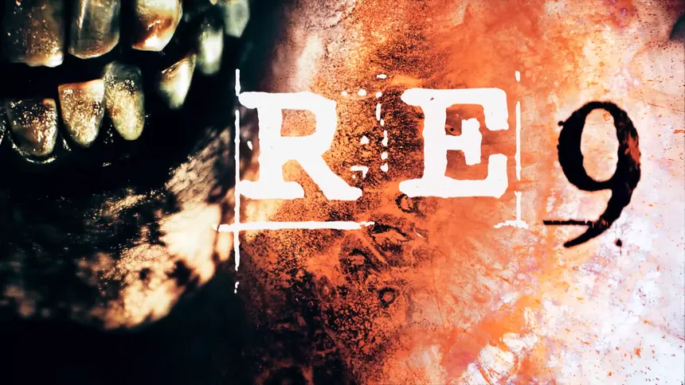
Años después de los eventos que marcaron el sacrificio de Ethan Winters y la aparición de nuevas amenazas biológicas, el mundo continúa enfrentando brotes aislados de bioterrorismo. Leon S. Kennedy, ahora un agente veterano con décadas de experiencia, es enviado a investigar un incidente en una ciudad europea aparentemente abandonada tras un brote no registrado oficialmente. Lo que en un principio parece una misión de reconocimiento pronto se transforma en una operación de alto riesgo.
Durante la investigación, Leon se cruza con Grace, una joven superviviente que posee un conocimiento inusual sobre lo ocurrido en la zona. A diferencia de otros civiles, Grace parece comprender la naturaleza del brote y demuestra habilidades que sugieren que ha estado expuesta a algún tipo de experimento. Aunque al principio desconfían el uno del otro, ambos se ven obligados a colaborar para sobrevivir en un entorno dominado por criaturas desconocidas.
A medida que avanzan, descubren que el incidente no fue causado por un virus convencional, sino por una nueva forma de agente biológico que combina características de infecciones anteriores, incluyendo comportamientos similares a Las Plagas y al moho. Este nuevo organismo no solo infecta el cuerpo, sino que altera la percepción y la memoria, creando una realidad distorsionada para sus víctimas.
Leon comienza a sospechar que Grace está directamente vinculada a estos experimentos. Eventualmente, se revela que ella fue parte de un programa secreto que buscaba crear individuos capaces de resistir y controlar este nuevo agente. Sin embargo, el proyecto fue abandonado tras perder el control, dando origen al brote actual. Grace lucha constantemente contra la influencia de esta infección, temiendo convertirse en una amenaza.
El verdadero responsable detrás de los eventos resulta ser una organización desconocida que ha estado recolectando datos de todos los incidentes pasados relacionados con Umbrella, Tricell y otras entidades. Su objetivo es crear la forma definitiva de arma biológica, una que no solo infecte, sino que evolucione de manera autónoma. Leon y Grace se enfrentan a múltiples manifestaciones de esta amenaza mientras intentan detener su propagación.
En el enfrentamiento final, Grace decide enfrentarse directamente al núcleo del organismo, utilizando su propia conexión con la infección para debilitarlo desde dentro. Leon, por su parte, lucha para protegerla y asegurar que el plan funcione. Tras una intensa batalla, logran destruir la fuente del brote, pero el destino de Grace queda incierto, dejando a Leon con la duda de si logró sobrevivir o si se perdió junto con la amenaza.
Con la misión concluida, Leon abandona la ciudad sabiendo que, una vez más, el mundo ha estado al borde de una catástrofe. Sin embargo, también comprende que nuevas amenazas seguirán surgiendo. Resident Evil Requiem representa un nuevo capítulo en la lucha contra el bioterrorismo, donde el enemigo ya no es solo un virus, sino la evolución constante de los errores del pasado.
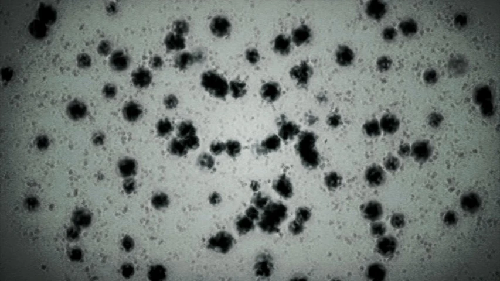
El Virus-T es uno de los elementos centrales en la historia de Resident Evil y representa el origen del bioterrorismo moderno dentro de la saga. Su desarrollo se remonta a las investigaciones de Umbrella basadas en el Virus Progenitor, un agente biológico descubierto en África con propiedades únicas capaces de alterar la evolución humana. A partir de este hallazgo, científicos como James Marcus, William Birkin y Albert Wesker trabajaron en la creación de una variante controlada que pudiera ser utilizada como arma: así nació el Virus-T.
El objetivo principal del Virus-T era crear armas biológicas conocidas como B.O.W (Bio Organic Weapons), capaces de superar a los soldados humanos en combate. Sin embargo, el virus resultó ser altamente inestable. En la mayoría de los casos, los sujetos infectados perdían completamente la conciencia, convirtiéndose en zombis impulsados únicamente por instintos básicos como la agresión y el hambre. Solo en casos excepcionales, con individuos genéticamente compatibles, se lograban resultados más avanzados, como los Tyrants.
El Virus-T es responsable de los primeros grandes incidentes de la saga, incluyendo el brote en la Mansión Spencer y la destrucción de Raccoon City en 1998. Estos eventos marcan el inicio de una crisis global, donde el uso de armas biológicas deja de ser un experimento secreto para convertirse en una amenaza real. Su propagación descontrolada demuestra que Umbrella perdió completamente el control de sus propias creaciones.
A lo largo de la saga, el Virus-T aparece en múltiples títulos, incluyendo Resident Evil 0, Resident Evil (Remake), Resident Evil 2, Resident Evil 3: Nemesis, Resident Evil Survivor, Umbrella Chronicles y Darkside Chronicles. Aunque posteriormente es reemplazado por virus más avanzados, muchas de sus variantes siguen siendo utilizadas como base para nuevas armas biológicas.
En términos de letalidad, el Virus-T es extremadamente peligroso. Su tasa de mortalidad es altísima, ya que la mayoría de los infectados mueren o se transforman en criaturas sin control. Además, se propaga con facilidad a través de fluidos corporales, mordidas o contaminación ambiental. Su capacidad de mutación también da lugar a una gran variedad de criaturas, desde zombis hasta formas más complejas como Lickers y Tyrants.
El legado del Virus-T es fundamental en la saga, ya que establece las bases para todos los desarrollos posteriores en el campo del bioterrorismo. Incluso cuando nuevas amenazas surgen, muchas de ellas derivan directa o indirectamente de este virus. Representa el primer gran error de la humanidad al intentar manipular la vida como arma, y sus consecuencias continúan afectando al mundo mucho después de su creación.
El Virus-G es una de las mutaciones más avanzadas y peligrosas derivadas de las investigaciones de Umbrella, desarrollado por el científico William Birkin como una evolución directa del Virus-T. A diferencia de su predecesor, el Virus-G no solo reanima a los muertos o genera criaturas agresivas, sino que introduce un concepto mucho más complejo: la evolución constante del organismo infectado.
El desarrollo del Virus-G se basa en la investigación del Virus Progenitor y en los intentos de mejorar las limitaciones del Virus-T. Birkin buscaba crear una forma de vida capaz de regenerarse indefinidamente y adaptarse a cualquier entorno. Sin embargo, el virus resultó ser altamente inestable, requiriendo un huésped genéticamente compatible para alcanzar su verdadero potencial. En la mayoría de los casos, la infección produce mutaciones descontroladas.
El incidente principal relacionado con el Virus-G ocurre durante los eventos de Resident Evil 2, cuando Birkin es traicionado por agentes de Umbrella que intentan robar su investigación. Gravemente herido, decide inyectarse el virus, iniciando una transformación progresiva que lo convierte en una criatura cada vez más monstruosa. A lo largo del tiempo, su cuerpo evoluciona en múltiples formas, aumentando su tamaño, fuerza y capacidad regenerativa.
Una de las características más peligrosas del Virus-G es su necesidad de reproducirse. El organismo busca constantemente crear descendencia implantando embriones en otros cuerpos. Sin embargo, solo individuos con compatibilidad genética adecuada pueden sobrevivir a este proceso. Este aspecto convierte al virus en una amenaza no solo por su poder destructivo, sino también por su capacidad de propagarse de manera selectiva.
El Virus-G aparece principalmente en Resident Evil 2 y sus versiones posteriores, así como en adaptaciones como Darkside Chronicles, donde se profundiza en sus efectos y en la tragedia de William Birkin. Aunque no se utiliza tan ampliamente como el Virus-T, su impacto es significativo debido a su capacidad de evolución extrema.
En términos de letalidad, el Virus-G es incluso más peligroso que el Virus-T en ciertos aspectos. Mientras que el Virus-T genera grandes cantidades de infectados, el Virus-G crea entidades únicas con un poder devastador. Su capacidad de regeneración hace que sea extremadamente difícil de eliminar, y cada nueva mutación lo vuelve más resistente. Esto lo convierte en una de las armas biológicas más temidas dentro del universo de Resident Evil.
El legado del Virus-G reside en su concepto de evolución continua, una idea que influirá en futuros desarrollos biológicos dentro de la saga. Representa un paso más allá en la ambición de Umbrella, demostrando que el verdadero peligro no es solo crear vida, sino perder el control de su capacidad para evolucionar sin límites.
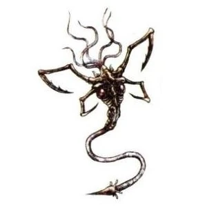
Las Plagas representan una de las amenazas más distintas dentro del universo de Resident Evil, ya que no se trata de un virus tradicional, sino de un parásito ancestral capaz de controlar a su huésped sin eliminar completamente su conciencia. Descubiertas en una región rural de Europa, estas criaturas fueron utilizadas siglos atrás antes de ser selladas debido a su peligrosidad. Con el tiempo, fueron redescubiertas y explotadas como una nueva forma de arma biológica.
A diferencia del Virus-T o el Virus-G, Las Plagas no convierten a las personas en zombis sin mente, sino que les permiten mantener cierto nivel de inteligencia y coordinación. Esto hace que los infectados, conocidos como Ganados, sean mucho más organizados, capaces de usar herramientas, comunicarse entre sí y seguir órdenes. Este cambio introduce un nuevo tipo de amenaza, más estratégica y difícil de predecir.
El uso moderno de Las Plagas está estrechamente ligado al culto de Los Iluminados, liderado por Osmund Saddler. Bajo su control, el parásito es utilizado para dominar a poblaciones enteras, creando un ejército completamente obediente. Uno de los aspectos más peligrosos es la capacidad del líder de controlar a todos los infectados mediante una Plaga dominante, lo que convierte la infección en una red centralizada.
Las Plagas son el eje principal de los eventos de Resident Evil 4, donde Leon S. Kennedy debe enfrentarse a esta amenaza mientras intenta rescatar a Ashley Graham. Durante estos eventos, también se revela que el parásito ha sido modificado y mejorado mediante investigaciones, aumentando su capacidad de adaptación y mutación. Versiones posteriores de Las Plagas aparecen en otros títulos, como Resident Evil 5, donde se combinan con otros agentes biológicos.
En términos de letalidad, Las Plagas son extremadamente peligrosas debido a su versatilidad. No solo permiten controlar a los infectados, sino que también pueden generar mutaciones avanzadas, como la aparición de apéndices o criaturas emergentes del cuerpo del huésped. Además, al mantener la movilidad y coordinación de las víctimas, representan una amenaza más eficiente en combate que los zombis tradicionales.
El legado de Las Plagas marca un cambio importante en la saga, alejándose del concepto clásico de infección y acercándose a una forma de control biológico más sofisticada. Su combinación de inteligencia, control mental y capacidad de mutación las convierte en una de las armas biológicas más completas y peligrosas jamás vistas, demostrando que el bioterrorismo puede evolucionar más allá de los virus tradicionales.
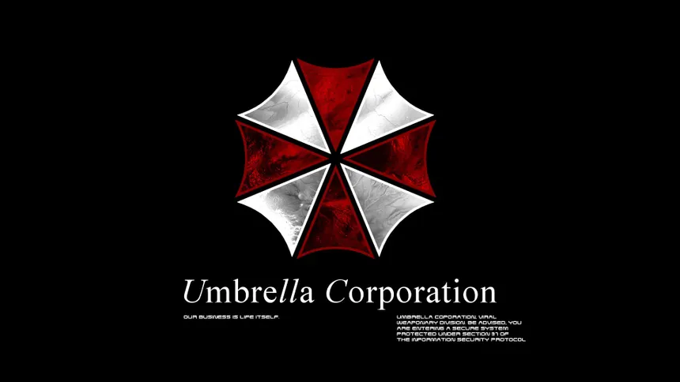
La Corporación Umbrella fue una poderosa empresa multinacional que operaba bajo la fachada de una compañía farmacéutica, pero cuyo verdadero propósito era el desarrollo de armas biológicas. Fundada a partir de las investigaciones del Virus Progenitor, Umbrella se convirtió en el principal responsable del surgimiento del bioterrorismo moderno dentro del universo de Resident Evil.
Detrás de su creación se encontraban figuras clave como Oswell E. Spencer, Edward Ashford y James Marcus, quienes buscaban utilizar el poder del Virus Progenitor para impulsar la evolución humana. Sin embargo, sus ideales rápidamente se corrompieron, dando lugar a experimentos enfocados en la creación de B.O.W (Bio Organic Weapons). Estas armas vivientes serían utilizadas con fines militares, generando enormes beneficios económicos y poder global.
A lo largo de los años, Umbrella desarrolló múltiples variantes virales, incluyendo el Virus-T y el Virus-G, llevando a cabo experimentos en humanos y animales sin ningún tipo de ética. Científicos como William Birkin y Albert Wesker jugaron roles fundamentales en estos proyectos, contribuyendo tanto al avance de la investigación como a su eventual colapso.
El punto de quiebre para Umbrella ocurre en 1998, con los incidentes en la Mansión Spencer y el posterior brote en Raccoon City. La propagación del Virus-T fuera de control expone las actividades de la corporación al mundo, generando una crisis internacional. Como consecuencia, Umbrella enfrenta múltiples investigaciones y pierde su influencia, culminando en su caída como entidad dominante.
A pesar de su aparente desaparición, el legado de Umbrella continúa. Sus investigaciones fueron filtradas, robadas o vendidas en el mercado negro, permitiendo que otras organizaciones como Tricell y grupos terroristas continuaran desarrollando armas biológicas. Esto marca el inicio de una nueva era de bioterrorismo descentralizado.
Entre los miembros más importantes de Umbrella se encuentran Oswell E. Spencer, el fundador con una visión obsesiva sobre la evolución; Albert Wesker, quien traicionó a la organización para seguir sus propios objetivos; William Birkin, creador del Virus-G; y la familia Ashford, responsables del desarrollo del Virus T-Veronica. Cada uno de ellos dejó una marca profunda en la historia del bioterrorismo.
La Corporación Umbrella no solo representa una organización dentro de la saga, sino el origen de todos los conflictos principales. Su ambición desmedida y su falta de ética desencadenaron una cadena de eventos que transformaron el mundo, demostrando que el mayor peligro no era el virus en sí, sino las personas que decidieron crearlo.
La BSAA (Bioterrorism Security Assessment Alliance) es una organización internacional creada con el objetivo de combatir el bioterrorismo a nivel global. Surge tras la caída de Umbrella, cuando el mundo comienza a enfrentar amenazas biológicas cada vez más frecuentes y dispersas. Inicialmente fundada como una organización privada, con el tiempo pasa a estar bajo el control de las Naciones Unidas, convirtiéndose en una de las principales fuerzas de respuesta ante incidentes biológicos.
Su misión principal es identificar, contener y eliminar amenazas relacionadas con armas biológicas, así como investigar brotes y desmantelar organizaciones responsables de su desarrollo. A diferencia de Umbrella, la BSAA opera bajo regulaciones internacionales, aunque en varias ocasiones se ha visto envuelta en decisiones cuestionables que ponen en duda sus métodos.
Entre sus miembros más destacados se encuentran Chris Redfield y Jill Valentine, veteranos de los incidentes de Raccoon City, quienes se convierten en figuras clave dentro de la organización. También forman parte agentes como Sheva Alomar y Parker Luciani, quienes participan en diversas operaciones alrededor del mundo.
La BSAA tiene un papel central en eventos como Resident Evil 5, donde combate el uso de Las Plagas en África, y Resident Evil Revelations, donde investiga conspiraciones relacionadas con el Virus T-Abyss. A lo largo de estas misiones, se muestra como una organización altamente equipada, con acceso a armamento avanzado y unidades especializadas.
Sin embargo, con el paso del tiempo, comienzan a surgir dudas sobre sus verdaderas intenciones. En eventos más recientes, se sugiere que la BSAA podría estar utilizando sus propias armas biológicas en combate, lo que representa una contradicción directa con su propósito original. Este cambio plantea interrogantes sobre si la organización sigue siendo una fuerza de protección o si ha comenzado a repetir los errores del pasado.
En términos de impacto, la BSAA representa el intento de la humanidad por corregir los errores cometidos con Umbrella. No obstante, también refleja la complejidad del bioterrorismo moderno, donde incluso las organizaciones creadas para proteger pueden verse tentadas por el poder de las armas biológicas. Su futuro dentro de la saga queda marcado por esta dualidad entre justicia y control.
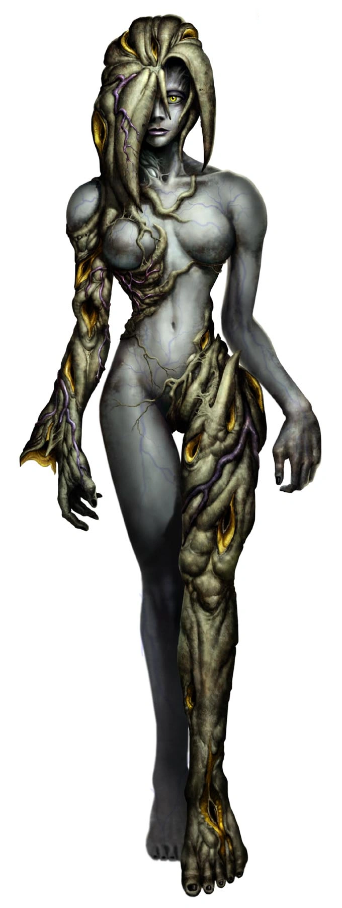
El Virus T-Veronica es una de las variantes más complejas y singulares del árbol genético de Umbrella. Fue creado por la prodigio Alexia Ashford, quien combinó el virus Progenitor con genes de hormiga reina y ADN de plantas. A diferencia del Virus-T convencional, esta cepa busca una simbiosis perfecta con el anfitrión, permitiendo que este conserve su inteligencia y adquiera habilidades extraordinarias, como el control pirocinético y la capacidad de comandar otras criaturas.
Los principales implicados en su desarrollo y experimentación fueron los miembros de la familia Ashford. Alexia lo utilizó en sí misma tras ver el fracaso inicial en su padre, Alexander Ashford, quien se convirtió en la monstruosa criatura conocida como Nosferatu. Años después, durante el incidente en la Isla Rockfort, el virus también fue administrado a Steve Burnside por orden de Alexia, demostrando su capacidad para inducir mutaciones masivas de forma casi instantánea.
En cuanto a su letalidad, el T-Veronica es extremadamente peligroso debido a su método de adaptación. Para evitar la destrucción de las células cerebrales y el colapso del cuerpo, el portador debe someterse a un proceso de criogenia durante 15 años, permitiendo que el virus se asimile lentamente. Sin este periodo de incubación controlada, el virus consume la conciencia del huésped, convirtiéndolo en una mutación incontrolable. Su capacidad para generar mutaciones de gran tamaño y poder lo sitúa como una de las armas biológicas más difíciles de contener en la historia de la franquicia.
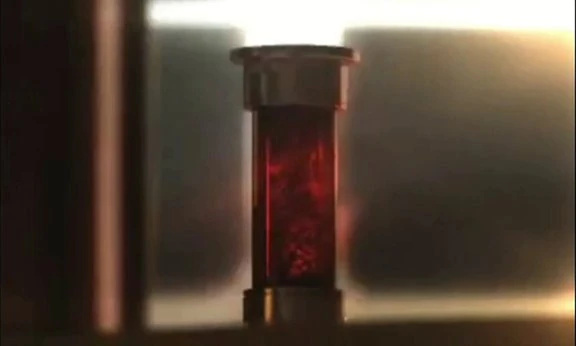
El Virus T-Abyss es una variante biológica extremadamente peligrosa que combina las propiedades del Virus-T con un virus recién descubierto en las profundidades marinas llamado "The Abyss". Este último fue hallado en peces abisales capaces de soportar presiones hidrostáticas inmensas. Al fusionarlos, los investigadores lograron una cepa que no solo muta a los humanos, sino que los adapta perfectamente a entornos acuáticos, otorgándoles una flexibilidad biológica aterradora.
El desarrollo de este virus estuvo rodeado de conspiraciones políticas de alto nivel. Los principales implicados fueron la FBC (Federal Bio-Terrorism Commission), bajo el mando de su director Morgan Lansdale, y el grupo terrorista Veltro, liderado por Jack Norman. Lansdale financió la investigación en laboratorios flotantes como el Queen Zenobia para orquestar el pánico global y justificar el poder de su organización, utilizando la ciudad de Terragrigia como campo de pruebas para el virus.
La letalidad del T-Abyss es considerada de nivel catastrófico debido a su capacidad de infección a gran escala. A diferencia de otros virus, el T-Abyss puede propagarse masivamente a través del agua del océano; se estima que, si el virus se liberara en una cantidad suficiente, podría contaminar todos los mares del mundo, infectando la vida marina y convirtiendo el ciclo del agua en un vector de contagio global.
En los huéspedes humanos, el virus genera criaturas conocidas como Oozes. Estas mutaciones se caracterizan por cuerpos pálidos, hinchados y la capacidad de licuar su estructura ósea para desplazarse por conductos estrechos o ventilaciones. Además, el virus drena los líquidos corporales de las víctimas para alimentarse, lo que convierte a cada infectado en un depredador incansable que busca sangre y fluidos para mantener su propia estabilidad celular.
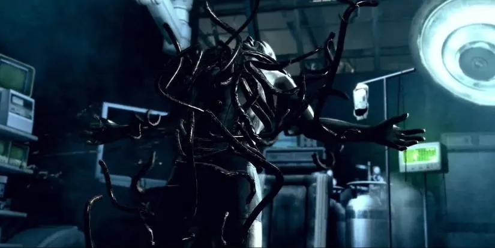
El Virus Uroboros representa la culminación del plan de Albert Wesker para forzar una evolución artificial en la raza humana. Basado en el virus Progenitor, Wesker logró estabilizar esta cepa gracias a los anticuerpos encontrados en el organismo de Jill Valentine, tras años de haber estado expuesta al Virus-T. A diferencia de otros agentes que buscan crear armas biológicas convencionales, Uroboros fue diseñado como una herramienta de selección natural: solo aquellos con un ADN compatible podrían asimilarlo para convertirse en superhumanos, mientras que los "indignos" serían consumidos por él.
Los principales responsables de este proyecto fueron Albert Wesker, quien orquestó el plan desde las sombras, y Excella Gionne, la directora de la división africana de la compañía TRICELL. Utilizando las instalaciones de Kijuju como laboratorio a gran escala, experimentaron con la población local para perfeccionar el virus antes de su lanzamiento planeado a través de misiles de dispersión atmosférica.
La letalidad de Uroboros es absoluta y aterradora. En caso de incompatibilidad con el huésped, el virus provoca un crecimiento descontrolado de crecimientos orgánicos negros, similares a tentáculos o sanguijuelas, que devoran al anfitrión desde dentro en cuestión de segundos. Estos infectados pierden cualquier rastro de humanidad y se convierten en una masa biológica que consume activamente cualquier materia orgánica cercana para seguir expandiéndose. Su objetivo final, conocido como la "Saturación Global", habría provocado la extinción de casi toda la vida en la Tierra, dejando atrás solo a una élite seleccionada bajo el control de Wesker.
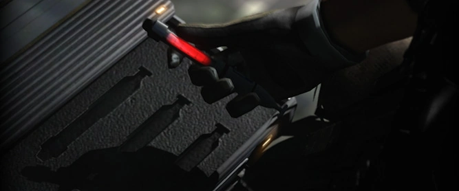
El Virus-C (Chrysalid Virus) es una amalgama biológica altamente avanzada que combina elementos del Virus-G y el Virus T-Veronica. Desarrollado por la investigadora Carla Radames, este agente destaca por su versatilidad extrema, permitiendo crear diferentes tipos de mutaciones dependiendo de la vía de infección. Su característica más distintiva es el estado de Crisálida: tras la infección, el cuerpo del huésped se envuelve en una estructura rígida de la cual emerge una criatura completamente nueva y mucho más poderosa.
El desarrollo del virus estuvo financiado y dirigido por Derek C. Simmons, el Consejero de Seguridad Nacional y líder de "La Familia". El objetivo de Simmons era crear un arma biológica definitiva y, en un giro personal oscuro, utilizar el virus para "recrear" a Ada Wong a través de Carla Radames. Bajo el estandarte de Neo-Umbrella, el Virus-C fue utilizado en ataques coordinados en EE. UU., Europa y China, provocando un caos mundial.
En términos de letalidad, el Virus-C es devastador debido a sus dos formas principales de manifestación. Si se inhala en forma de gas (como ocurrió en Tall Oaks), convierte a las personas en zombis ágiles y resistentes. Si se inyecta directamente, crea a los J'avo: soldados inteligentes que conservan el uso de armas, pero que mutan partes específicas de su cuerpo al recibir daño. La capacidad del virus para generar "Especies de Mutación Completa" desde las crisálidas lo convierte en una amenaza táctica imposible de predecir, capaz de poner en jaque a ejércitos enteros en cuestión de horas.
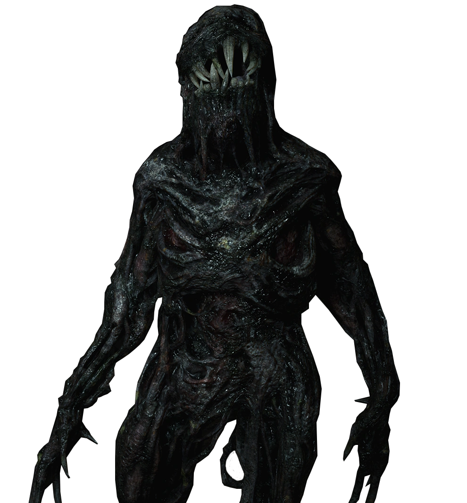
El Moho es un superorganismo fúngico descubierto originalmente en Europa del Este, cuya fuente principal es un ente masivo subterráneo conocido como la Megamiceta. A diferencia de los virus artificiales, el Moho posee una red de memoria consciente, capaz de almacenar el ADN y los recuerdos de aquellos que infecta. La variante más famosa, la Serie-E, fue diseñada para ser utilizada como una herramienta de guerra psicológica, permitiendo el control mental absoluto sobre poblaciones enteras sin disparar una sola bala.
El desarrollo de la Serie-E, personificada en la niña Eveline, fue llevado a cabo por el sindicato criminal conocido como The Connections (Las Conexiones), con la ayuda técnica de H.C.F. (la organización de Albert Wesker). Los investigadores buscaban crear un arma biológica que pudiera infiltrarse en comunidades y convertirlas en sirvientes leales. El proyecto culminó en el desastre de la familia Baker en Luisiana, tras el naufragio del barco que transportaba a Eveline.
La letalidad del Moho radica en su capacidad de regeneración y control. Al infectar a un huésped, el hongo reemplaza gradualmente sus células, otorgándole una resistencia física sobrehumana y la capacidad de reponer extremidades perdidas, pero a costa de la voluntad propia. Aquellos que sucumben totalmente se transforman en Hologramas de Moho (Molded), masas de hongo negro altamente agresivas. Además, el Moho crea una "red mental" donde la conciencia de las víctimas persiste dentro de la Megamiceta, convirtiendo la muerte en algo relativo y permitiendo que la infección se extienda como una conciencia colectiva imparable.
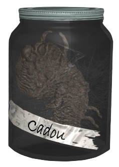
El Cadou (que significa "regalo" en rumano) es un organismo parasitario diseñado genéticamente por la Madre Miranda. Este parásito fue creado exponiendo el Moho de la Megamiceta a diversos nematodos, con el fin de aumentar la velocidad y eficiencia de la infección en seres humanos. A diferencia de la Serie-E, el Cadou actúa como un catalizador que busca al huésped perfecto para albergar la conciencia de la hija fallecida de Miranda, Eva.
Los principales implicados en este oscuro experimento fueron la propia Madre Miranda y los líderes de las Cuatro Familias del pueblo: Alcina Dimitrescu, Karl Heisenberg, Donna Beneviento y Salvatore Moreau. Cada uno de ellos mostró una compatibilidad excepcional con el parásito, lo que les otorgó habilidades únicas y mutaciones extraordinarias, aunque la mayoría fueron considerados "experimentos fallidos" por Miranda al no ser recipientes puros para Eva.
La letalidad del Cadou es sumamente variable pero devastadora. En la mayoría de los habitantes del pueblo, el parásito provoca una mutación violenta que los convierte en Lycans, criaturas de aspecto lobuno con una agresividad salvaje pero que mantienen cierta capacidad de organización. En los huéspedes más compatibles, el Cadou puede otorgar control sobre la electricidad, regeneración celular extrema o manipulación de feromonas. Sin embargo, el riesgo de inestabilidad es constante; si el cuerpo del anfitrión rechaza el parásito o sufre un trauma masivo, el Cadou puede expandirse sin control, convirtiendo al individuo en una masa de carne y hongo gigante carente de cualquier rastro de humanidad.
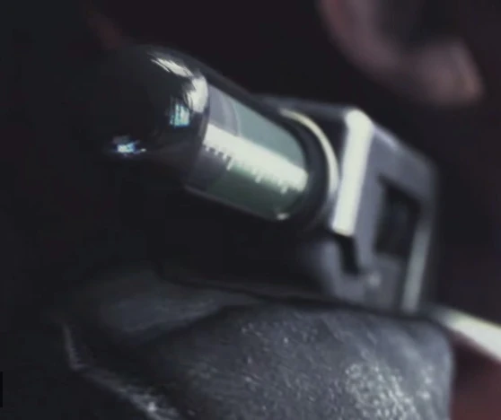
El Virus T-Phobos es una variante del Virus-T diseñada específicamente para reaccionar ante la respuesta emocional del huésped, concretamente el miedo. Fue desarrollado en la remota Isla Zabytij como parte de un proyecto de investigación para identificar a individuos con una voluntad excepcional. A diferencia de otras cepas que mutan al anfitrión de forma inmediata, el T-Phobos permanece latente en el cuerpo hasta que el sujeto experimenta un nivel crítico de terror, momento en el que el virus se activa y consume el organismo.
La mente maestra tras este experimento fue Alex Wesker, una de las candidatas supervivientes del Proyecto W. Junto a su equipo de investigadores, Alex buscaba un método para transferir su conciencia a un nuevo cuerpo que fuera capaz de resistir el virus sin mutar, lo que requería que el candidato tuviera una resistencia psicológica absoluta ante el miedo. Para monitorizar esto, los sujetos (como Claire Redfield y Moira Burton) eran obligados a llevar pulseras que cambiaban de color según sus niveles de adrenalina y noradrenalina.
La letalidad del T-Phobos es particularmente cruel. Si el portador sucumbe al pánico, el virus causa una mutación rápida que lo convierte en un Afligido (Afflicted), seres que conservan una apariencia humana pero que sufren una locura extrema y una agresividad incontrolable debido al dolor constante de sus deformaciones. En sujetos masculinos que no superan la prueba, la mutación suele ser violenta y terminal, mientras que el objetivo final de Alex era encontrar a "la persona que no conoce el miedo" (Natalia Korda) para asegurar su propia inmortalidad mediante la transferencia de su mente.
Fundado en 1996 como una división de élite dentro del Departamento de Policía de Raccoon City (R.P.D.), el equipo S.T.A.R.S. fue concebido para manejar situaciones de alto riesgo, como terrorismo y rescates complejos. Aunque operaba bajo jurisdicción policial, gran parte de su financiamiento provenía de la Corporación Umbrella, lo que permitió a la unidad contar con especialistas militares, expertos en bioquímica y pilotos de primer nivel.
La organización se dividía en dos equipos principales: el Equipo Alpha, liderado por Albert Wesker y compuesto por miembros icónicos como Chris Redfield, Jill Valentine y Barry Burton; y el Equipo Bravo, liderado por Enrico Marini, donde servían Rebecca Chambers y Richard Aiken. Cada miembro cumplía un rol específico (RS - Seguridad de Retaguardia, PM - Mecánico de Puntería, etc.), formando una de las unidades tácticas más eficientes del país.
Sin embargo, el destino de los S.T.A.R.S. fue una traición orquestada. Durante el Incidente de la Mansión en julio de 1998, se reveló que su capitán, Albert Wesker, era un agente doble de Umbrella. La unidad fue enviada a las Montañas Arklay con el propósito oculto de servir como sujetos de prueba reales para recopilar datos de combate contra las armas biológicas (B.O.W.s).
Tras la masacre en la mansión, donde la mayoría de los miembros del equipo Bravo y varios del Alpha perecieron, los supervivientes intentaron exponer a Umbrella. No obstante, la influencia de la corporación sobre el Jefe de Policía Brian Irons llevó a la disolución oficial de la unidad. El legado de los S.T.A.R.S. perduró a través de sus supervivientes, quienes dedicaron sus vidas a fundar organizaciones antiterroristas como la B.S.A.A. para erradicar el mal que Umbrella había desatado.
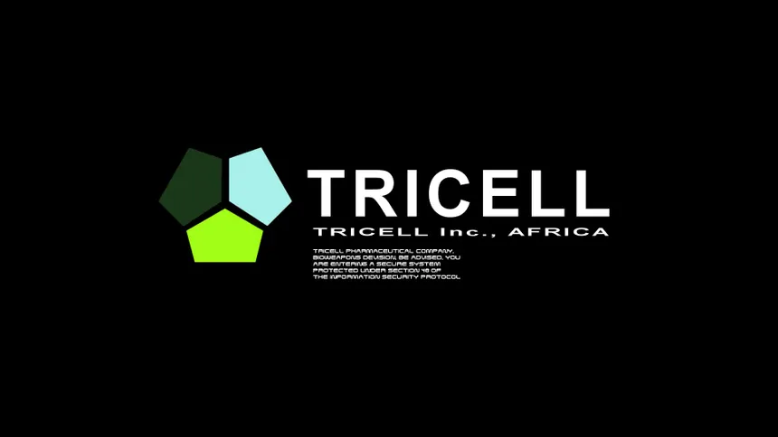
TRICELL es un conglomerado multi-industrial con una historia que se remonta a la era de las exploraciones bajo el nombre de "Travis Enterprises". Tras el colapso de la Corporación Umbrella, TRICELL aprovechó el vacío de poder en el mercado negro de armas biológicas para adquirir gran parte de las investigaciones y activos de la antigua compañía. Lo que comenzó como una empresa de transporte y extracción de recursos evolucionó en una de las farmacéuticas más poderosas y peligrosas del planeta, operando bajo una fachada de ayuda humanitaria.
La división africana de la compañía estuvo bajo el control de Excella Gionne, una mujer ambiciosa de la familia fundadora que formó una alianza secreta con Albert Wesker. Juntos, utilizaron los recursos de TRICELL para financiar y perfeccionar el proyecto Uroboros. Otros implicados clave incluyen a Ricardo Irving, un traficante de armas biológicas que operaba como agente de la compañía en la región de Kijuju, facilitando la propagación de Las Plagas tipo 2 y 3 para probar su efectividad en combate.
La letalidad de TRICELL no radicaba solo en sus virus, sino en su alcance logístico. A diferencia de Umbrella, que operaba en instalaciones aisladas, TRICELL integró la bio-experimentación en sus operaciones comerciales globales. Fueron responsables de la creación de criaturas masivas como el U-8 y de perfeccionar el control mental mediante dispositivos inyectables. Su caída se produjo tras el incidente de África en 2009, cuando sus actividades bioterroristas fueron expuestas por la B.S.A.A., revelando que la empresa había estado dispuesta a sacrificar ecosistemas enteros con tal de lograr la supremacía genética.
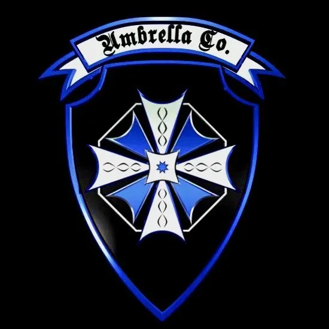
Tras la quiebra oficial de la corporación original en 2003, un grupo de antiguos empleados, horrorizados por el legado de Ozwell Spencer, decidió reformar la empresa bajo una filosofía opuesta. Así nació Blue Umbrella (distinguida por su logotipo azul en lugar del rojo tradicional). Su objetivo declarado es reparar el daño causado por su predecesora, desarrollando tecnologías para combatir el bioterrorismo y suministrando armamento especializado a organizaciones como la B.S.A.A.
A pesar de sus buenas intenciones declaradas, la organización opera bajo una vigilancia extrema del gobierno de los Estados Unidos. Entre los implicados más destacados en sus operaciones de campo se encuentra Chris Redfield, quien, aunque mantiene una profunda desconfianza hacia la marca, aceptó colaborar con ellos durante el incidente de Luisiana (Resident Evil 7) bajo una unidad de élite. Blue Umbrella proporcionó tecnología clave para neutralizar el Moho, como la potente pistola "Albert-01" y sueros experimentales.
En términos de operatividad, Blue Umbrella es letal, pero no por crear monstruos, sino por su capacidad para destruirlos. Se especializan en la creación de armas de fuego y dispositivos de contención diseñados específicamente contra B.O.W.s, como la unidad de purificación de aire y equipos de limpieza química. Sin embargo, su existencia sigue rodeada de escepticismo; muchos supervivientes de Raccoon City y agentes internacionales se preguntan si esta "nueva cara" es real o si es simplemente una estrategia para recuperar el acceso a investigaciones biológicas prohibidas bajo el amparo de la ley.
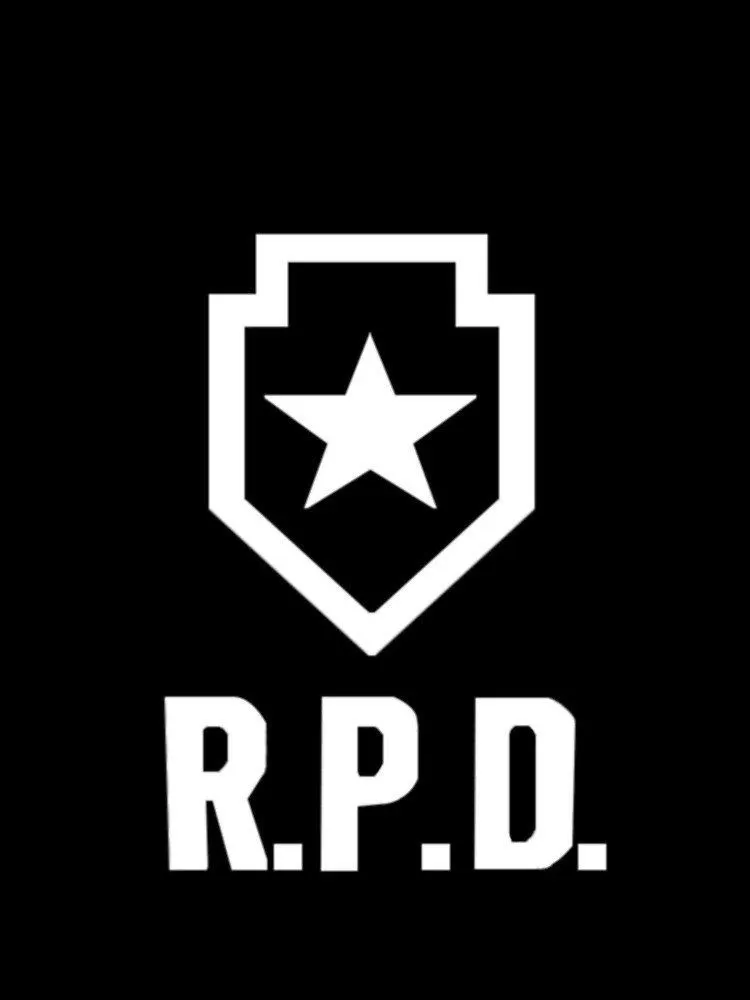
El Departamento de Policía de Raccoon City era la principal fuerza de seguridad de la ciudad, operando desde un majestuoso edificio que antiguamente funcionaba como un museo de arte. Esta arquitectura única, llena de pasadizos secretos y acertijos mecánicos, se convirtió en un símbolo de esperanza y, posteriormente, en una tumba durante el brote del Virus-T en septiembre de 1998. El departamento contaba con unidades especializadas y tecnología de vanguardia, financiada en gran medida por las "donaciones" de la Corporación Umbrella.
Los implicados dentro del departamento se dividen entre héroes y traidores. En el lado de la justicia destacan el oficial novato Leon S. Kennedy y el teniente Marvin Branagh, quienes intentaron mantener el orden mientras la ciudad colapsaba. Sin embargo, la corrupción nacía desde la cabeza: el Jefe de Policía Brian Irons estaba en la nómina de Umbrella, ocultando pruebas y saboteando las defensas de la comisaría desde dentro para asegurar que Raccoon City fuera consumida por el caos, llegando incluso a asesinar a sus propios oficiales.
La letalidad del R.P.D. durante el incidente no provino de sus armas, sino de su vulnerabilidad. A pesar de ser una de las estaciones de policía mejor equipadas del país, la traición interna de Irons y la infiltración de criaturas como los Lickers y el Tyrant (Mr. X) convirtieron el edificio en una trampa mortal. La caída del R.P.D. marcó el fin de cualquier autoridad civil en la ciudad, dejando a los pocos supervivientes a su suerte antes de la ejecución de la Operación Bacilo, que borró la comisaría y toda la ciudad del mapa con un ataque termobárico.